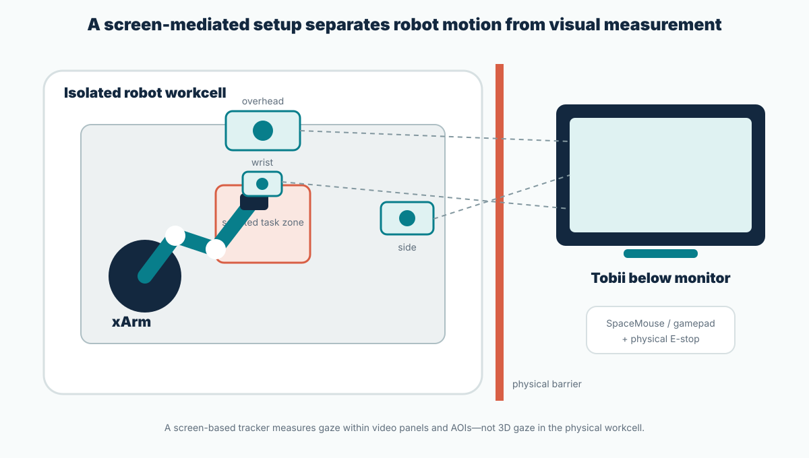
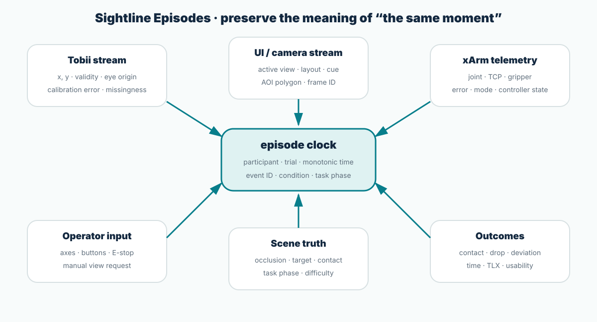

Implementable specification · authority before automation
Define what every component knows—
and what it is allowed to do.
A Windows gaze-capture process, an Ubuntu/ROS 2 robot backend, fixed camera streams, an experiment orchestrator, and a browser operator interface are separated by explicit authority boundaries. The central rule is architectural: the gaze process cannot publish motion commands, and the robot backend does not subscribe to gaze.
Physical rig
Separate the robot cell from the operator station
The participant sees the workcell only through the experimental display. This makes screen gaze interpretable relative to rendered camera panels and keeps participants outside the robot workspace.

Original reference layout. Exact arm, gripper, camera, mount, display, and tracker remain provisional until the G0 inventory audit.
| Subsystem | Minimum viable configuration | Preferred configuration | Required verification |
|---|
| Robot | Audited xArm5/6/7 and compatible gripper | xArm6 reference only if actually available | model/SN, firmware, payload, control modes, errors |
| World camera | Fixed RGB overhead | Calibrated RGB-D | intrinsics, extrinsics, latency, crop, exposure |
| Side camera | Fixed RGB | Calibrated RGB-D | contact-plane visibility and frame alignment |
| Wrist camera | Optional fixed small RGB | RealSense D435i eye-in-hand | hand–eye calibration and motion blur |
| Eye tracker | Exact Tobii SKU with permitted data access | Research-capable screen tracker | SDK/license, monitor geometry, calibration quality |
| Explicit control | Gamepad with dead-man input | SpaceMouse with clutch | mapping, rate, failure state, physical E-stop |
| Capture | Single recorder with source timestamps | PTP-capable multi-machine capture | offset, drift, frame drop, disk throughput |
Official platform support: xarm_ros2 ↗ documents ROS 2/MoveIt and D435i eye-in-hand examples. The study still recalibrates the actual hardware and records the calibration artifact per session.
Software authority
Two closed loops, only one motion path
Putting eye tracking, interface adaptation, and motion control in one process creates an unnecessary pathway from gaze to action. Separate processes, credentials, topics, and failure modes make the non-command claim testable.

Original architecture. A code review can verify the forbidden connection: gaze affects the display policy only.
Windows · Tobii capture client
- Receives gaze samples and per-sample validity through the licensed SDK
- Stores display geometry, calibration/validation metadata, and device time
- Attaches a local monotonic timestamp at callback
- Publishes a read-only
gaze.samples stream - Contains no robot IP, control topic, or command credential
Ubuntu · ROS 2 robot backend
- Publishes joint, TCP, gripper, controller mode, error, and state
- Captures calibrated camera streams and frame timestamps
- Receives controller input through one guarded gateway
- Applies workspace, velocity, acceleration, dead-man, and fault rules
- Does not subscribe to gaze or inspection coverage
Experiment orchestrator
- Controls participant, block, trial, task, scene, and condition state
- Versions task phase, AOIs, risk weights, and thresholds
- Computes C2/C3 triggers online and shadow triggers in C0/C1
- Issues event IDs and synchronization heartbeats
- Falls back when data quality or synchronization fails
Operator interface
- Renders identical encoded feeds for all conditions
- Implements C0–C3 layout policies, hysteresis, and explicit override
- Displays robot errors and controller/dead-man state
- Hides live gaze cursor during experimental trials
- Logs render time, visible panel rectangles, and every layout event
Authority invariant: only the guarded controller gateway can publish robot.command. Gaze and display components may request a UI event, never a robot or motorized-camera event.
Geometric risk model
Begin with an interpretable display trigger
A learned black-box failure predictor would entangle the interface experiment with unknown model errors. The first study uses transparent geometry and task state, then records enough data for later model comparison.
| Signal | Candidate computation | Interpretation | Failure mode |
|---|
| Proximity | Distance from gripper/TCP geometry to target contact surface | How near is physical interaction? | Bad calibration shifts the threshold |
| Projected time-to-contact | Distance divided by positive approach velocity, clipped | How much inspection time remains? | Near-zero speed produces unstable ratios |
| Critical visibility | Visible fraction of the task-critical surface after robot-mask overlap | Does the main view still contain evidence? | Object detection does not equal surface visibility |
| Task-phase gate | search / approach / pre-contact / contact / retreat | Is the signal relevant now? | Phase lag can create late cues |
| Control instability | Reversal, jerk, burst-idle pattern | Exploratory difficulty evidence | Often occurs after the problem; not a primary trigger |
Reference form
risk_t = clip(w_p P_t + w_c TTC_t + w_o O_t + w_s S_t, 0, 1)
Weights and normalization ranges are frozen after the technical pilot. Report component values for every trigger so errors can be traced to geometry rather than treated as opaque model failures.
Risk ≠ safety: this score decides when to show information. Collision avoidance remains the responsibility of robot limits, guards, workcell design, supervision, and the E-stop.
Inspection coverage
Bind gaze to a rendered AOI and a task phase
A gaze coordinate becomes analyzable only when the system knows the exact screen layout, source camera frame, AOI polygon, visibility, calibration uncertainty, and task phase at the same timestamp.
| Phase | Required evidence | Candidate auxiliary view | Coverage feature |
|---|
| Selection | target identity relative to distractors | overhead | target first-view plus distractor comparison |
| Approach | gripper–target relation and obstacle path | overhead / wrist | recent gripper↔target transition |
| Pre-contact | contact edge and z-gap | side / wrist | uncertainty-aware contact-AOI inspection before TTC gate |
| Transport | held-object retention and destination | overhead | object check plus destination preview |
| Placement | edge alignment and release state | side / wrist | alignment-AOI inspection before release |
Dynamic AOI
Camera calibration and robot/object tracking update polygons by frame. Store detector and calibration versions.
Uncertainty margin
Report hard AOI hits plus dilated or Gaussian-overlap sensitivity under plausible gaze error.
Visibility flag
An AOI can be looked at while its evidence is occluded. Record visibility separately from gaze overlap.
Invalid gaze
Missing samples are missing data. They trigger a C2 fallback, not a claim that the operator failed to inspect.

Original construct boundary. Variable names use “inspection evidence” rather than “attention,” “understanding,” or “intent.”
Online policy
Make every trigger reproducible
The policy requires risk, missing inspection evidence, sufficient gaze quality, and a view that would actually reveal the critical surface. It also includes temporal stability rules.
eligible_t = risk_t ≥ τ_risk ∧ coverage_t(AOI*) < τ_cov ∧ quality_t ≥ τ_q ∧ visibility(aux, AOI*) ≥ τ_vis
Selection
Choose the auxiliary feed with the highest verified visibility of the current critical AOI. If none pass the visibility threshold, do not invent confidence; display an unavailable-evidence state.
Hysteresis
Separate onset/release thresholds, minimum on-time, and cooldown prevent panel flicker. Trigger state is a finite-state machine, not a raw Boolean every frame.
Fallback
Invalid gaze turns C3 into C2. Camera failure removes that candidate. Excess sync residual disables online adaptation and retains shadow logging.
Every assist event stores
policy_version, component risk values, critical AOI/version, gaze-quality window, coverage estimate, candidate-view visibility, chosen view, eligibility time, render time, release reason, manual override, and downstream physical outcome.
Operator interface
Small, stable, reversible, and legible
A display transition can disturb control even when the selected view is informative. Sightline constrains visual behavior so the trigger policy—not rendering novelty—drives the comparison.
Picture-in-picture
Preserve the main feed and enlarge one auxiliary view to roughly 20–30% of display area during pilot tuning.
Stable placement
Assign side and wrist feeds to fixed regions. Do not move the panel near the current gaze point.
Predictable timing
Use a brief fixed transition, minimum on-time, and cooldown. Log actual browser render time.
Explicit override
Pin, close, or select another view with controller buttons. Record whether the assist was accepted, ignored, or reversed.
Do not display
- Live gaze cursor: it changes looking behavior and can become an unintended target cue.
- Green “safe” confirmation: lack of a cue cannot certify safety.
- Full-screen flash or reflow: strong attentional capture can alter both gaze and hand control.
- Gaze click: a fixation never commits grasp, continue, stop, or view-selection action.
- Hidden automation: a subtle indicator should state why a view appeared without implying mental-state knowledge.
Time synchronization
Twenty milliseconds can reverse cause and response
The analysis must distinguish gaze that preceded a cue from gaze captured by the cue. Preserve device clocks and estimate mapping to a common monotonic timeline.
Timestamp at source
Assign device/local monotonic time at the Tobii callback, camera capture, controller callback, robot-state receipt, and UI render. Network receive time alone is insufficient.
Map clocks
Use a shared monotonic clock on one machine or audited PTP/NTP/clock-mapping across machines. Store estimated offset and drift, not only converted time.
Emit shared event markers
Trial start, layout change, assist onset, button pulse, grasp, release, contact, error, and E-stop receive common event identifiers.
Audit end to end
Use observable events such as an LED appearing in camera frames alongside an input pulse to estimate full capture-to-render residual per session.
Enforce a quality gate
If residual error is large relative to the hypothesized gaze-to-assist window, disable online adaptation and retain only shadow-mode analysis.
Report a distribution: median offset alone can hide tail latency. Store median, spread, upper quantile, drift slope, and frame-drop count by stream and session.
Dataset
Sightline Episodes
The dataset unit is not “a video” or “a gaze file.” It is a synchronized episode in which screen content, gaze evidence, operator input, robot state, policy decisions, and physical outcomes can be reconstructed.

Original schema. Raw video and raw gaze remain access controlled; any public export is produced by a separate, documented derivation pipeline.
| Table / stream | Key fields | Granularity | Quality field |
|---|
episodes | participant, block, trial, task, scene, condition, order, seed | one row per trial | completion and exclusion state |
gaze | device/local/common time, x, y, validity, eye origin, pupil optional | device sample | tracking ratio and calibration version |
robot_state | joint, TCP, gripper, mode, error, controller state | ROS state rate | sequence gap and source time |
control_input | axes, buttons, clutch, dead-man, E-stop | input sample/event | device disconnect |
camera_frames | camera, frame ID, source/common time, encoding, calibration | frame | dropped/late frame |
ui_events | active view, panel geometry, cue on/off, override, render time | event | render latency |
aoi_frames | frame, object/surface, polygon, phase, required, visible fraction | frame/keyframe | model/audit version |
policy_events | risk components, coverage, quality, eligibility, selected view, release | policy transition | policy version |
outcomes | success, contact, drop, deviation, time, ratings, rater | event/trial | blinding and agreement |
quality | sync residual, tracking, calibration, frame drop, fault | trial/block/session | pass/fail reason |
Leakage-safe split
Participant, scene layout, and adjacent repeated trials remain grouped when training any later predictive model.
Versioned semantics
AOI, task graph, calibration, risk, policy, interface, and outcome-scoring versions make recomputation possible.
Negative events retained
Invalid gaze, camera dropout, false cue, no cue, recovery, and aborted trials are data—not inconvenient files to delete.
Privacy and release
Collect less, separate more, release deliberately
Gaze traces are behavioral data. Raw camera feeds may incidentally contain identifiable information. Storage, analysis rights, and public-release rights are separate decisions.
Minimize
Do not record participant face video by default. Collect demographics only when tied to a hypothesis.
Pseudonymize
Use random participant IDs. Store consent/contact records outside the episode repository.
Tier access
Separate raw gaze/video, internal derived data, and public aggregate/derived export with distinct permissions.
Honor withdrawal
Document how episode IDs map to consent records and what can still be removed after aggregation or release.
License gate: Tobii’s Stream Data License guidance indicates that analytical use may require additional permission. Public release is not inferred from SDK access or participant consent alone.
Official Tobii SDLA page ↗
Safety and failure handling
Sensor loss must reduce automation, not increase it
Tobii and camera assistance are not protective layers. Their failure should produce a predictable manual or geometry-only state while independent robot controls handle physical risk.
| Failure | Interface/orchestrator response | Robot response | Logged evidence |
|---|
| Gaze invalid or disconnected | C3 → C2, visible status, trial flag | No motion-policy change | quality window and transition time |
| Auxiliary camera stale/dropout | Hide candidate, mark unavailable; never show a frozen feed as live | Dead-man policy may slow/stop if main feed is affected | frame age and dropout interval |
| Synchronization residual exceeded | Disable online adaptation, continue shadow logging | Manual guarded control remains | offset/drift audit and fallback event |
| Browser/UI failure | Experimenter ends trial; no silent restart | Controller dead-man releases and robot stops | UI heartbeat loss and stop reason |
| Robot fault or singularity | Show error and scripted recovery state | Controller/guard stops motion | xArm error/mode/state sequence |
| Physical E-stop | Lock episode and end trial immediately | Physical stop; experimenter-only reset | E-stop source and recovery checklist |
Claim boundary: even a lower observed contact rate would show an interface effect under a restricted test protocol. It would not establish that Sightline “makes xArm safe,” meets a safety standard, or replaces robot risk assessment.